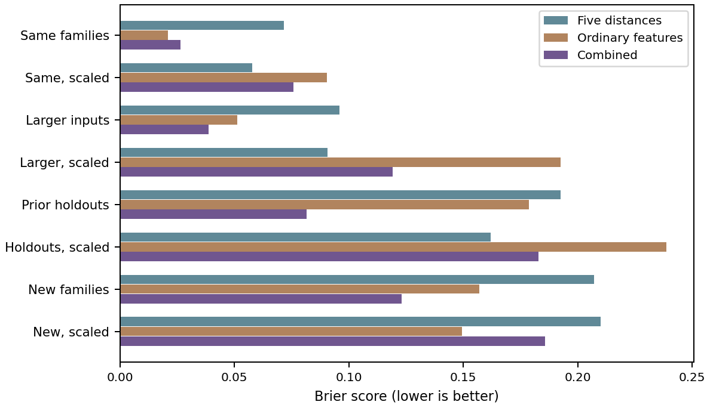

Predicting Subset-Sum Completion: The Value and Cost of Structural Features
Abstract. Can distance from easily solved subset-sum structures predict exact completion within a computational budget, and does obtaining that information repay its cost? We construct five certified distances, compare them with ten ordinary numerical features and their combination, and distinguish prediction quality from paid solving performance. A local freeze precedes \(1{,}152\) fresh paired encoded cases. Combined logistic Brier score is \(0.0266\), versus \(0.0211\) for ordinary features; the primary comparison does not improve. Tighter live-time pool budgets give \(836\) versus \(823\) completions, but work-counter budgets give \(374\) versus \(769\). A separate exploratory transfer test applies the same frozen model to certified branch checks on \(216\) fresh problems. At 50 ms each, combined guidance completes \(159\), ordinary search \(152\), and a simple distance rule \(162\). Exact structural checks help on this sample; the learned gate adds no demonstrated advantage. These results connect prediction to Note I’s verified coverage framework while retaining its discovery and certification costs. They establish neither a general speedup nor a learned certificate of polynomial-time solvability.
The question is completion, not reachability
Given positive integer weights \(w=(w_1,\ldots,w_n)\) and an integer target \(t\), subset sum asks whether an indexed selection totals \(t\). Equal weights remain separate items. Note V studied one sufficient source of efficient exact solution: discover a superincreasing core and search its exceptions. This note asks whether several such structural distances help predict a fixed solver’s completion.
The proposed five numbers describe proximity to superincreasing weights, complete interval coverage, few distinct values, small reachable support, and compact interval or progression representations. We also ask whether their information complements ordinary summaries of input size, weight magnitudes and target position. Neither useful prediction nor a small feature vector implies that the underlying decision problem becomes polynomial-time solvable.
Let \(A\) be a fixed exact pipeline, \(L_x\) the full encoded length of instance \(x=(w,t)\), and \(B(L_x)\) its declared work allowance. The supervised label is \[Y_B(x)=\mathbf 1\{A(x)\text{ finishes exactly within its resource limits and }B(L_x)\}.\] A model fitted under distribution \(\mathcal D\) estimates \[\Pr_{X\sim\mathcal D}\!\left(Y_B(X)=1\mid\phi(X)=\phi(x)\right).\] This is different from predicting whether a subset exists. Completion can be a correct YES or a correct NO. A run reaching a limit is unresolved, even when an independent experimental oracle knows the answer. Polynomial time is an asymptotic statement about an algorithm on a family; finite-budget completion is an observable event.
To compare feature information, all predictors first use the same reference label, excluding feature acquisition. A separate practical experiment pays for acquisition, inference, ordering, exact core queries and returned-witness checks. A model that predicts this reference event accurately can still be a poor use of a shared budget. A later exploratory experiment transfers the frozen model into a search tree, using exact structural checks to resolve residual subproblems. Its independent evidence is reported separately from the original frozen comparison.
Established setting and narrow contribution
Instance-feature runtime and success prediction belong to empirical performance modeling [1]. Learned solver portfolios such as SATzilla already account for presolving and feature cost [2]. ASlib explicitly records feature costs and instances solved while computing features [3]. Our practical task orders instances for a fixed fallback portfolio; it does not learn which constituent solver to select.
A close domain precedent is Jooken, Leyman and De Causmaecker’s use of structural knapsack features to predict empirical difficulty [4]. Thus neither theory-derived hardness features nor their combination with learning is a new general idea. Sigmoid probability calibration is also established [5]. The tractable-core framing has relatives in backdoors [6]; superincreasing membership and support-sensitive subset sum have established treatments [7], [8].
The contribution here is a reproducible, bounded-cost five-coordinate construction, a frozen subset-sum comparison, and an exploratory certified-pruning test that keep prediction, exact solving, feature cost and resource definitions separate. The primary unfavorable result is retained. We claim no new learning method, optimal allocation rule, state-of-the-art subset-sum solver, or novelty of the elementary core lemmas. A claim-by-claim audit accompanies the paper.
Five distances with exact core procedures
First apply exact target-dependent reductions. Reject an out-of-range target. If \(t>\sum_iw_i/2\), use the complementary target. Discard weights exceeding the current remainder; reject a deficient total or a gcd obstruction. Force an item when all other remaining items together cannot reach the remainder, subtract it, and repeat. A zero remainder supplies a witness; incompatible forced choices prove NO.
These operations take polynomial bit time: every forced iteration removes an item, and each iteration uses polynomial scans and gcd computations. Save forced indices, retained indices and complementation for witness recovery. Items removed by an exact exclusion are resolved choices, not exceptions that must later be searched. A completed reduction has an empty residual kernel. Practical policies finish there without computing ML features.
For an unresolved kernel \(v\), fix the gcd \(g\) of the whole kernel and normalize \(a=v/g\). The five integer coordinates are deletion counts relative to this kernel and grid: \[\phi_5(x)=(d_{\rm SI},d_{\rm cov},d_{\rm val},\widehat d_{\rm supp},\widehat d_{\rm repr}).\] The first three are minimum deletions under the definitions below. The last two are certified constructive upper bounds, not optimized distances.
| Coordinate | Certified remaining core | Discovery/query method |
|---|---|---|
| \(d_{\rm SI}\) | Sorted \(a_j>\sum_{h<j}a_h\) | Maximum greedy core; descending query |
| \(d_{\rm cov}\) | Sorted \(a_j\le1+\sum_{h<j}a_h\) | Maximum coverage prefix; greedy witness |
| \(d_{\rm val}\) | At most two distinct values | Keep two largest multiplicities; count choices |
| \(\widehat d_{\rm supp}\) | At most 128 distinct reachable sums, including zero | Capped exact unions with witness masks |
| \(\widehat d_{\rm repr}\) | Bounded-prefix interval core or distinct-weight progression core | Larger certified core; exact represented query |
For coverage, the empty prefix reaches \([0,0]\). Adding \(a\le S+1\) to a prefix covering \([0,S]\) extends coverage to \([0,S+a]\). At the first failure, all later weights exceed \(S+1\); deleting earlier weights cannot fill that gap. Thus the retained prefix is maximum. Its definition uses the fixed whole-kernel gcd, not a freely chosen gcd for each candidate core.
For small support, trial addition replaces \(R\) by \(R\cup(R+a)\); reject the item if the result exceeds 128 sums. A trial constructs at most 256 entries. For intervals, merge the sorted intervals for \(R\) and \(R+a\), coalescing adjacent intervals; accept only if at most eight intervals remain. Every accepted prefix is saved. This prefix condition bounds construction and witness recovery; a small final union alone would not bound all intermediate representations.
The fifth coordinate also searches distinct-weight arithmetic progressions. Candidate steps are \(1\) and the most frequent adjacent distinct-value gaps, with deterministic ties, up to 16 steps. For each, scan maximal chains and retain one index per value. Choose a progression only if it contains more items than the interval core. Duplicates outside a chain remain exceptions. This search is polynomial and cannot worsen the old fifth deletion count, but it can miss a better core or a progression with another step.
Two elementary guarantees
Progression query. Suppose the selected weights are \(a,a+h,\ldots,a+(m-1)h\). A selection of \(k\) items totals \(ka+hJ\), where exactly the integer interval \[\frac{k(k-1)}2\le J\le\frac{k(2m-k-1)}2\] is attainable. Begin with indices \(0,\ldots,k-1\); distribute the desired surplus by moving the last index right, then the preceding one, preserving strict order. Every surplus up to \(k(m-k)\) is possible. The reachable set is therefore represented by \(m+1\) progressions, one per cardinality. Testing all \(k\) and recovering a witness take \(O(m)\) arithmetic steps. Overlapping progressions are queried, not counted as disjoint.
Residual sufficient condition. If a certified extractor costs \(F(L)\), leaves \(k\) exceptional items and supplies an exact core query with witness cost \(Q(L)\), exceptional-selection enumeration gives \[T(x)\le F(L)+2^k\bigl(Q(L)+\operatorname{poly}(L)\bigr).\] Every original selection decomposes into a core and exceptional selection. Therefore polynomial \(F,Q\) and \(k=O(\log L)\) suffice for polynomial solution of a family. The argument applies to constructed deletion upper bounds as well as minima. A large distance proves no hardness. All represented sums have polynomial bit length; the capped data and progression procedures have polynomial bit cost. These elementary guarantees are independent of model training.
Development, models and the frozen comparison
Development followed a 162-list feasibility pilot. A second dataset had 324 lists and 1,296 targets, with exactly the same family/size grouping for every feature arm. The fitted models use only 84 training lists (336 targets) and 42 calibration lists (168 targets). Other development cases informed design choices but were not fitted in the final models.
The three final arms are the five target-aware progression distances; ten ordinary features; and their 15-input concatenation. Ordinary features are \(n\), encoded length \(L\), base-two logarithms of total, maximum and minimum weight after adding one, distinct-value fraction, coefficient of variation, \(t/\sum w\), \(\min(t,\sum w-t)/\sum w\), and \(n/\max(1,\log_2(\max w+1))\). Constant and individual-coordinate comparisons were retained in development; the fresh study fixes these three arms.
Primary logistic regression standardizes inputs and uses \(C=1\), L2 regularization and at most 2,000 iterations. Secondary forests use 200 trees, maximum depth eight and minimum leaf size four. An independent logistic sigmoid calibrates each model’s clipped raw logit, with clipping at \(10^{-6}\) and \(1-10^{-6}\). This is the implemented regularized calibration, not a claim to reproduce every detail of original Platt scaling.
The local freeze saved six fitted/calibrated models, protected sources, seed rules, resource limits, comparisons and hashes before fresh generation. It is not external preregistration. The freeze timestamp is October 25, 2026, 16:34 UTC. No fresh labels fit, calibrate or select a model.
Fresh cases and exact labels
The study draws \(144\) base lists: \(n=24,32,38\), twelve families, replacement fractions zero and one quarter, and two seed replicates. Seven families occur in training: superincreasing, coverage, few values, small support, interval union, progression and wide random inputs. Near-equal and filtered-modular families are prior development holdouts. Genuinely new families are separated block pairs, mixed small/large weights, and two progression blocks.
Each base list receives a fair-bit planted target, a uniform middle-range target, an odd target below the largest weight, and a uniform low-range target. There is no selection by answer or solver success. Jointly multiply weights and targets by \(2^{24}+1\) to create a paired encoding alongside scale one. The resulting \(288\) encodings give \(1{,}152\) cases. Scaling preserves the mathematical answer but changes \(L\), the work allowance and bitset feasibility; it is a controlled representation change, not arbitrary independent bit-length variation.
Fresh sorted lists are checked against earlier lists and each other. Duplicate proposals and bounded retries are recorded. Independent indexed-half enumeration labels each base target; scaling preserves its witness or exhausted NO result. Oracle tables are destroyed before measured solving.
The reference pipeline performs exact target reduction, then filtered range/gcd checks, bitset dynamic programming, superincreasing exception enumeration, memoized depth-first search, and meet-in-the-middle. The remaining work is shared among remaining methods, carrying unused work forward. Limits are \(B(L)=8L\) instrumented units, 32,768 live states, and a 1,000,000-bit bitset width. The encoding proxy is \[L=2\operatorname{bits}(n)+1+\sum_i(2\operatorname{bits}(w_i)+1)+2\operatorname{bits}(|t|)+2,\] where \(\operatorname{bits}(z)\) is Python’s nonnegative integer bit length. It is polynomially equivalent to standard binary encodings. The work units are heterogeneous counters, not bit operations.
There is one work-limited reference run and three additional reference timing runs per case, the latter with 20 ms cooperative per-case deadlines. All \(3{,}466\) completed decisions among \(4{,}608\) reference runs match independent labels; \(1{,}142\) remain unresolved. Repetitions are not additional independent inputs.
The primary probability result does not improve
The prespecified primary endpoint is combined-minus-ordinary logistic Brier score on fresh unscaled same-family inputs: \[\operatorname{Brier}=\frac1N\sum_{j=1}^N(\widehat p_j-Y_j)^2.\] Lower is better. The primary scores are \(0.0715\) for five distances, \(0.0211\) for ordinary features and \(0.0266\) combined. The difference is \(+0.0055\), with conditional 95% base-list bootstrap interval \([-0.0018,+0.0138]\). This does not establish predictive improvement.
| Cohort | Cases | Five | Ordinary | Combined | Difference |
|---|---|---|---|---|---|
| Same families | 224 | 0.0715 | 0.0211 | 0.0266 | +0.0055 |
| Same, scaled | 224 | 0.0579 | 0.0905 | 0.0759 | -0.0146 |
| Larger inputs | 112 | 0.0958 | 0.0512 | 0.0387 | -0.0125 |
| Larger, scaled | 112 | 0.0907 | 0.1926 | 0.1190 | -0.0735 |
| Prior holdouts | 96 | 0.1925 | 0.1786 | 0.0816 | -0.0970 |
| Holdouts, scaled | 96 | 0.1619 | 0.2387 | 0.1829 | -0.0558 |
| New families | 144 | 0.2071 | 0.1571 | 0.1231 | -0.0340 |
| New, scaled | 144 | 0.2101 | 0.1496 | 0.1857 | +0.0362 |
Secondary shifts show both advantages and failures. Combined beats ordinary descriptively on larger inputs and unscaled new families, but loses on scaled new families. Conditional bootstrap intervals exclude zero for scaled larger inputs and unscaled prior holdouts, not for every favorable point estimate. Resampling uses 1,000 base-list draws with fitted models fixed; it includes neither retraining uncertainty nor a multiplicity correction. Secondary comparisons are descriptive.
Full metrics retain log loss, AUC, calibration bins and unresolved-kernel-only subgroups. Empty-kernel shortcuts appear in the overall prediction evaluation, so those known exact completions are not an ML discovery. Secondary forest results, which vary by shift, are reported in Appendix B rather than substituted for the primary model after observing outcomes.
At the fixed probability threshold 0.5, combined classification accuracy on the primary cohort is \(95.5\%\), versus \(97.8\%\) for ordinary features. These descriptive accuracies concern whole-instance completion of the reference pipeline. They measure neither infeasibility nor the quality of a pruning decision inside a search tree.

Paying for prediction in a shared budget
The practical test compares seven policies on each of eight cohort pools: seeded arrival, independent random order, shortest encoded input first, a simple distance rule, and the three logistic arms. All policies first pay for a pool-wide exact-precheck sweep. Structural policies extract only unresolved kernels and can finish cases through exact zero-deletion core queries. Learned policies then infer and order the residual cases; the same fallback portfolio attempts each at most once.
For work budgets, order by \(\widehat p_i/(8L_i)\); the distance rule uses \(2^{-\min_jd_j}/(8L_i)\). For time budgets, equal per-case caps give ordering by \(\widehat p_i\), or by the analogous distance score. These are heuristics, not optimal allocation rules. In particular, the time policy explicitly transfers a work-completion predictor to a wall-clock objective.
Budget shares are fixed at 20% and 50% of summed case allowances: \(\sum_i8L_i\) for work and \(|P|\times20\) ms for time pool \(P\). Three matched arrival repetitions and shuffled policy execution order yield \(672\) pool runs. Budget fractions are not selected from observed runtime. Returned indexed witnesses are checked within the paid interval; independent oracle comparisons are experimental validation outside it.
Planning cost constrains the benefit. For this full-batch policy, \[C_{\rm plan}=C_{\rm prechecks}+C_{\rm features}+C_{\rm queries} +C_{\rm inference}+C_{\rm order}.\] At most \(\max(0,B-C_{\rm plan})\) remains for fallback solving and witness checks. Exact completions can already occur during planning. If planning exhausts the budget, its learned ordering cannot act on the remaining cases. This is accounting for this policy, not a lower bound on every possible algorithm.
Live deadlines
Live runs recompute all applicable prechecks, features, queries, batch inference and ordering. Input/model loading and experimental logging are outside the interval; online overhead and witness checks are inside. Every solve has the smaller of its residual 20 ms allowance and remaining pool time. Deadlines are cooperative: a final operation can finish late, but late answers are excluded. The largest observed pool overshoot is \(0.44\) ms. This is not a hard process deadline.
| Budget | Share | Arrival | Random | Short | Rule | Five | Ordinary | Combined |
|---|---|---|---|---|---|---|---|---|
| Live time | 20% | 664 | 680 | 763 | 794 | 796 | 823 | 836 |
| Live time | 50% | 854 | 850 | 856 | 874 | 871 | 865 | 878 |
| Work counter | 20% | 541 | 560 | 705 | 379 | 379 | 769 | 374 |
| Work counter | 50% | 855 | 857 | 873 | 722 | 711 | 887 | 677 |
At the tighter live-time share, combined completes \(836\) cases versus \(823\) for ordinary features and \(664\) for arrival. Its gain over ordinary is \(13\) cases, or \(1.6\%\). Repetition totals range \(835\)–\(836\) for combined and \(822\)–\(825\) for ordinary. This is a modest measured benefit on these pools, not a confidence interval over unseen inputs or a universal speedup.
The effect is uneven. Under tighter live budgets, ordinary features complete more than combined on both new-family cohorts. On unscaled same-family and larger-input cohorts, the simple distance rule matches five-only ML and combined. Some improvements therefore arise from obtaining exact core answers rather than learning a better score.
Counter replay
The work endpoint charges prechecks, feature acquisition, inference, queries, ordering, solving and witness checks before their outputs can be used. A full-cap saved exact trace is reused only when the remaining global work permits that cap; otherwise the actual smaller-cap portfolio is executed. This replay is not a wall-clock measurement.
Under the tighter work share, combined completes \(374\) versus \(769\) for ordinary features; at the larger share it completes \(677\) versus \(887\). Combined exhausts planning in \(30\) of its 48 work-pool runs. Acquisition consumes the budget before useful ordering on many cases.
These counter units are explicit but unequal: a bitset update, dictionary entry and scan can have different CPU costs. The opposite live and counter outcomes must remain distinct. The unfavorable work result is not evidence that the mathematical instances are hard, and a live-time advantage cannot validate a uniform-operation complexity claim.
From completion prediction to certified branch checks
The follow-up implements Note I’s proposal–verification framework within exact search. At a node, selected prefix items contribute \(s\), the remaining items are \(W\), and the residual target is \(t-s\). Apply the same exact reduction and witness map used above. For the unresolved kernel, select the core with the smallest of the five deletion counts, breaking ties by coordinate order. If its exceptional set \(E\) has at most six items, enumerate its at most 64 subsets and query the easy core \(C\): \[t-s\text{ is reachable in }W \quad\Longleftrightarrow\quad \exists A\subseteq E:\ u-\textstyle\sum_{i\in A}v_i \text{ is reachable in }C,\] where \((v,u)\) is the reduced kernel instance. A successful query supplies a witness, lifted to the original instance. Failure of every exceptional selection certifies NO for the entire subtree. An interrupted check returns unresolved. Prediction alone removes no branch.
A new exploratory protocol
This is a separate transfer experiment, not an additional prespecified endpoint of the original study. The source and protocol were saved before generating \(72\) fresh lists: \(n=24,32,36\), the same twelve family constructions, replacement fractions zero and one eighth, and one list per cell. Previously saved lists are excluded. Each list has a planted, uniform middle-range, and odd-below-largest target, giving \(216\) cases. Independent half enumeration supplies 87 YES and 129 NO labels; oracle data are destroyed before measured solving. No model, calibration or threshold is refitted.
All policies use descending-weight, include-first depth-first search (DFS), suffix range/gcd tests, and no memoization. Checkpoints occur every four levels while at least eight items remain, up to 128 checkpoints. All policies, including DFS, receive the same exact target reductions at those checkpoints. Structural policies then acquire the five kernel distances. Numerical features, when acquired, describe the residual instance before reduction, as in model training.
Always-check policies attempt any core with at most six exceptions. The distance rule attempts only cores with at most two. Learned gates attempt a feasible check when the frozen ordinary or combined logistic score is at least 0.5. Native controls acquire only the distances; matched controls also acquire the ten ordinary features, isolating acquisition cost from the learned decision. Both learned gates use that same matched acquisition. Scalar inference is algebraically equivalent to the saved scaler/logistic/calibration pipeline and agrees with saved probabilities to eleven decimal places.
There are two separate resource experiments: one deterministic pass with at most 10,000 visited DFS nodes, and three live repeats with 50 ms per input and a one-million-node safety cap. Policy/case execution is seed-shuffled within each pass. Sorting, reductions, acquisition, inference, queries and witness checks occur inside the clock; model loading, oracle construction and serialization are outside. Deadlines are cooperative; late answers are excluded. The largest overshoot is \(1.565\) ms. The \(6{,}048\) runs have no incorrect completed decision.
| Policy | Live | Node cap | Nodes | Seconds | |
|---|---|---|---|---|---|
| DFS | 152 | 146 | 777 203 | 0.792 | |
| Always, native | 160 | 163 | 550 988 | 3.337 | |
| Distance rule, native | 162 | 161 | 580 067 | 2.511 | |
| Always, matched | 160 | 163 | 550 988 | 3.415 | |
| Distance rule, matched | 162 | 161 | 580 067 | 2.619 | |
| Ordinary ML | 156 | 159 | 591 329 | 3.650 | |
| Combined ML | 159 | 162 | 561 063 | 3.474 |
Certificates help; the learned gate does not win
At 50 ms, combined completes \(159\) cases against DFS’s \(152\), but the distance rule completes \(162\). Matched acquisition retains the simple rule’s advantage. The descriptive 95% list-bootstrap interval for combined-minus-DFS repeat-average completions is \([-6.0,17.0]\); against the native rule it is \([-11.7,1.7]\). Both span zero. These are 1,000 conditional whole-list resamples with fixed models and no multiple-comparison adjustment, not independent-node uncertainty or general hardware guarantees.
Pruning occurs inside the tree as well as at its root. In the node-capped pass, combined certifies \(3{,}545\) internal NO subtrees. Of its \(16\) extra completions versus DFS, \(8\) finish with a root structural query and \(8\) require further search. However, the \(146\) cases completed by both use \(0.478\) seconds with combined gating versus \(0.106\) for DFS. Feature acquisition can make already manageable cases slower. Fewer visited nodes therefore do not imply less paid work.
For a diagnostic only, take the first eight unresolved checkpoints per unguided node-capped DFS case. On these \(1{,}062\) selected, dependent residual problems, the combined score has \(69.9\%\) accuracy for completion of the bounded checker without a diagnostic deadline. That event means the six-exception limit permits exhaustive checking, not the old portfolio’s budgeted completion. Treating the same high score as a NO prediction would have only \(46.5\%\) precision; the solver never does so. The earlier whole-instance accuracy does not transfer unchanged to this task.
A certified NO node with \(m\) undecided original items resolves \(2^m\) assignment leaves. Such pruned subtrees are disjoint within this traversal, but these counts are neither visited nodes actually saved nor proof of a polynomial residual. In Note I’s notation they can increase \(a(n)\delta(n)\), while discovery and checking increase \(P(n)\). The observed benefit belongs to exact structure and its use; this experiment establishes no additional benefit from the transferred learned gate.
Limits and interpretation
The most direct predictive conclusion is unfavorable on the prespecified primary endpoint. Favorable secondary shifts and forest outcomes do not replace it. The training sample is small, families are synthetic, and larger means 38 items. No comparison against every strong theoretical or optimized practical subset-sum algorithm is attempted.
The original combined pool policy includes certified core queries that the ordinary pool policy does not construct. Therefore its live gain cannot be assigned solely to the five learned inputs. A matched-acquisition/core-reuse control was not retrofitted onto the original frozen inputs. The independent branch experiment supplies matched acquisition and common-verifier controls for a different task; it does not repair attribution in the earlier pool experiment. Its learned gate fails to beat the distance rule.
The paired scaling changes budgets and disables some bitset runs while preserving answers. It tests representation sensitivity, not an independent population of larger mathematical problems. Bootstrap units are base lists; live repetitions describe machine variation on fixed pools. Short cooperative deadlines and small absolute time differences limit transfer to other hardware. The saved environment is Python 3.13.5 on Windows 11, NumPy 2.1.3 and scikit-learn 1.6.1; a full CPU/load characterization was not recorded.
Prediction quality and solving utility are different objectives. A good Brier score gives no allocation guarantee, and sigmoid calibration fitted on one distribution gives no guarantee under a shift. For this implementation, structural features sometimes complement ordinary summaries and help a live policy after their costs are paid. They also fail the primary predictive comparison and impose substantial cost under the declared counter model.
The next controlled alternatives include a root-only structural control to isolate repeated internal checks, selective acquisition, reuse across related targets, and prediction of branch-specific net time saved. Any fitting or threshold selection needs its own training trees and fresh held-out lists. The present record supports a scoped empirical study of the value and cost of structural features. It does not support an intrinsic solvability classifier, learned mathematical exclusions, or a new general complexity bound.
Reproducibility
The repository’s Learned_Solvability_Subset_Sum package contains baseline and advanced extractors, exact membership/witness routines, the scoped literature audit, development evidence, fitted model hashes, all fresh inputs and oracle witnesses, every reference/priority trace, deadline exclusions, counters and figures. The original local freeze is in results/prospective_20261025; the independent branch follow-up is in results/branch_pruning_20261025, with its own protocol, source snapshots, raw runs, diagnostics and audit. Both validators preserve the distinction between the experiments and confirm answers against independent labels.
Run python build_papers.py –paper 6 to verify both preserved experiments and regenerate the PDF, HTML, values, tables and figure without rerunning training or timing. The evidence manifest beside the source records input/output hashes. The series website links the paper and supporting methods at https://jonland82.github.io/exponential-search-spaces/; the repository preserves executable sources and full raw evidence at https://github.com/jonland82/exponential-search-spaces.
Appendix A: Implementation details for the five coordinates
Superincreasing discovery uses Note V’s sorted maximum-cardinality scan. The few-values coordinate keeps all copies of the two most frequent values, breaking ties by value; no other two values retain more items. Membership enumerates their counts, at most \((n+1)^2\) choices. Coverage, superincreasing and support witnesses use original indexed items; interval queries backtrack through saved prefix sets.
For the support and interval coordinates, greedily reject an item when a trial exceeds its representation cap, then continue scanning. These are certified upper bounds, not minimum-deletion algorithms. A support trial has at most twice the saved support; an interval trial merges at most twice the saved interval count. The progression search uses polynomially many dictionary operations and a fixed 16-step candidate list. All arithmetic has polynomial input bit length. Bounded representations and membership do not imply that globally optimal core discovery is cheap.
The whole-kernel gcd fixes the interval grid. Target reduction can change the kernel and this gcd, giving different vectors to different targets, but two distinct targets may still have identical vectors. Forced and overweight items are not counted as unresolved exceptions. If complementation was used, complement the union of the forced set and lifted kernel witness to recover the original witness.
Counter scales additionally charge ordinary features \(12n+80\), logistic inference \(6d+20\) for \(d\) model inputs, a linear random shuffle and \(m\max(1,\operatorname{bits}(m))\) sorting scale. Structural extraction records its own charge. Whole-core queries use conservative complete-query charges and are skipped when that charge cannot fit. These are accounting conventions, not unit-cost instruction counts. All live phases are timed directly.
Appendix B: Prespecified secondary forests
| Cohort | Five | Ordinary | Combined |
|---|---|---|---|
| Same families | 0.0392 | 0.0275 | 0.0280 |
| Same, scaled | 0.0249 | 0.0596 | 0.0195 |
| Larger inputs | 0.1083 | 0.0513 | 0.0490 |
| Larger, scaled | 0.0931 | 0.0980 | 0.0540 |
| Prior holdouts | 0.2749 | 0.2019 | 0.1828 |
| Holdouts, scaled | 0.1864 | 0.2630 | 0.1164 |
| New families | 0.2010 | 0.1564 | 0.1497 |
| New, scaled | 0.2075 | 0.2562 | 0.1399 |
References
F. Hutter, L. Xu, H. H. Hoos and K. Leyton-Brown. Algorithm runtime prediction: Methods & evaluation. Artificial Intelligence 206 (2014), 79–111. https://arxiv.org/abs/1211.0906.
L. Xu, F. Hutter, H. H. Hoos and K. Leyton-Brown. SATzilla: Portfolio-based algorithm selection for SAT. JAIR 32 (2008), 565–606. https://doi.org/10.1613/jair.2490.
B. Bischl et al. ASlib: A benchmark library for algorithm selection. Artificial Intelligence 237 (2016), 41–58. https://arxiv.org/abs/1506.02465.
J. Jooken, P. Leyman and P. De Causmaecker. Features for the 0-1 knapsack problem based on inclusionwise maximal solutions. European Journal of Operational Research 311(1) (2023), 36–55. https://doi.org/10.1016/j.ejor.2023.04.023.
A. Niculescu-Mizil and R. Caruana. Predicting good probabilities with supervised learning. ICML (2005), 625–632. https://www.cs.cornell.edu/~alexn/papers/calibration.icml05.crc.rev3.pdf.
R. Williams, C. P. Gomes and B. Selman. Backdoors to typical case complexity. IJCAI (2003), 1173–1178. https://www.cs.cornell.edu/selman/papers/pdf/03.ijcai.backdoors.pdf.
SageMath. Knapsack problems: Superincreasing sequences. https://doc.sagemath.org/html/en/reference/numerical/sage/numerical/knapsack.html.
K. Bringmann and V. Nakos. Top-\(k\)-convolution and the quest for near-linear output-sensitive subset sum. STOC (2020), full version. https://arxiv.org/abs/2107.13206.